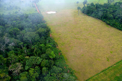
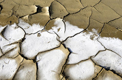
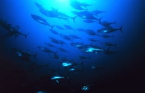
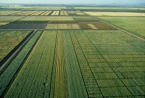
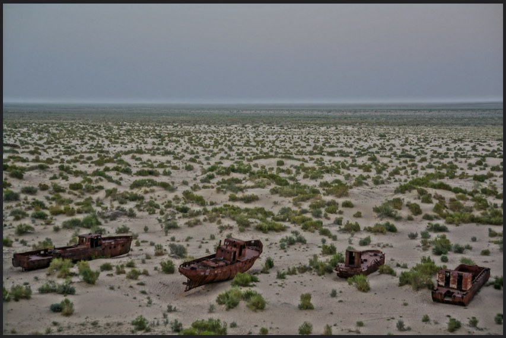
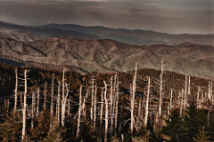
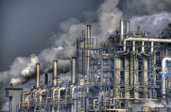
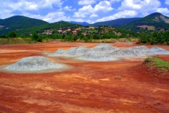
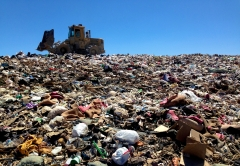
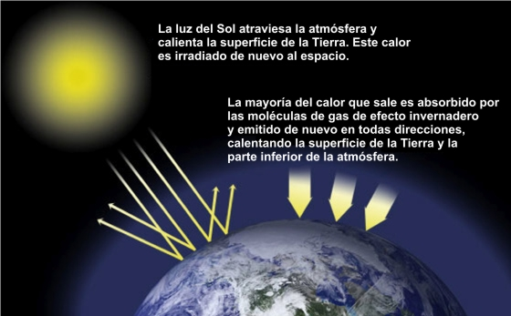

1. Los problemas medioambientales
¿Cuáles son los principales problemas que afectan hoy al medio ambiente como consecuencia de la acción del hombre? Podemos agruparlos en varias categorías.
a) Explotación excesiva del medio natural.
La presión del ser humano sobre los recursos naturales ha sido muy grande y se ha agravado por el aumento de población, por prácticas poco eficientes (es decir, que obtienen poco resultado en relación con lo que se gasta para conseguirlo) y por hábitos de consumo poco responsables. Dentro de este apartado podemos distinguir varios fenómenos:
|
 |
| Deforestación en el Amazonas (Brasil) Imagen en Flickr de CIFOR. Licencia CC BY-NC 2.0 |
|
|
 |
| Desertificación en Timor Oriental Imagen en Flickr de la ONU. Licencia CC BY-NC-ND 2.0 |
|
|
 |
| El atún rojo es una de las muchas especies marinas amenazadas por la pesca excesiva. Imagen en Wikimedia Commons de D. Cedrone. Dominio público |
|
|
 |
| Campos de trigo en México La ocupación de grandes extensiones de tierra por unas pocas especies destinadas al consumo ha contribuido a reducir la biodiversidad. Imagen en Flickr de CIMMYT. Licencia CC BY-NC 2.0 |
Para saber más
El mar de Aral
¿Recuerdas haber estudiado en el tema 2 el Mar de Aral entre los mares interiores de Asia? Pues seguramente no lo recuerdes, porque no hicimos mención de él. Y eso que antes lo estudiábamos como uno de los grandes mares interiores. Estaba al este del Mar Caspio y de él solo quedan algunos lagos dispersos. La mayoría se ha convertido en un desierto porque la agricultura de regadío acabó desviando casi toda el agua de la que se alimentaba. Es un buen ejemplo... o más bien un mal ejemplo de la explotación excesiva del medio natural.
|  |
| Barcos encallados en lo que una vez fue el mar de Aral Imagen en Flickr de Mr Hicks46. Licencia CC BY-SA 2.0 |
b) Contaminación.
Las actividades del ser humano liberan al medio ambiente productos químicos o físicos que lo alteran y perjudican. Muchos de esos efectos perjudiciales permanecen durante muchísimo tiempo. Los principales tipos de contaminación son los siguientes:
|
 |
| Árboles muertos por lluvia ácida en el Parque Nacional de Great Smokey Mountains (EEUU) Imagen en Flickr de The Shared Experience. Licencia CC BY-NC-ND 2.0 |
|
|
 |
| Contaminación atmosférica en Austria Imagen en Flickr de Juergen Uch. Licencia CC BY-NC-ND 2.0 |
|
|
 |
| Suelo contaminado por la minería en Kosovo Imagen en Flickr de Luca. Licencia CC BY 2.0 |
|
|
 |
| Vertedero en EEUU Imagen en Flickr de A. Levine. Licencia CC BY 2.0 |
c) Cambio climático.
En el último siglo la Tierra ha experimentado un calentamiento global. La principal causa es que desde el comienzo de la industrialización (finales del siglo XVIII) el ser humano ha emitido a la atmósfera enormes cantidades de gases que aumentan el efecto invernadero.
El efecto invernadero consiste en que la atmósfera retiene parte de la radiación solar que la Tierra refleja. El resultado es un calentamiento de la atmósfera. Dentro de ciertos márgenes es un efecto natural y gracias a él la temperatura de la Tierra es adecuada para los seres vivos. El problema es que el aumento de la emisión de gases con efecto invernadero ha hecho que la atmósfera retenga demasiado calor.
|  |
| Esquema del efecto invernadero Imagen en Global Climate Change de NASA (texto traducido). Licencia de uso de la NASA para usos no comerciales |
El principal gas de efecto invernadero es el dióxido de carbono (CO2). En condiciones naturales, los árboles capturan dióxido de carbono, ayudando a mantener un equilibrio en las temperaturas. El problema es que desde la industrialización el ser humano ha usado como fuente de energía el carbón y el petróleo, que nacen de árboles en descomposición. Así que todo el dióxido de carbono que esos árboles capturaron durante millones de años se ha liberado a la atmósfera en un siglo.
Es verdad que la Tierra ha experimentado en el pasado cambios climáticos más fuertes que el que vivimos. El problema ahora no es solo que deseamos evitar la extinción de numerosas especies adaptadas a las condiciones actuales. Es también que las complejas sociedades humanas del presente necesitan unas condiciones climáticas muy concretas para poder mantener sus delicadas estructuras. El cambio climático que estamos experimentando está teniendo ya numerosos efectos nocivos: deshielo de los polos, aumento del nivel del mar, inundaciones, lluvias y sequías catastróficas, huracanes, extensión de enfermedades tropicales hacia latitudes medias...
Importante
Los principales problemas medioambientales provocados por el hombre tienen que ver con la explotación excesiva del medio natural, la contaminación y el cambio climático.
Comprueba lo aprendido
Como el medio ambiente es un único sistema muy complejo, todos los problemas medioambientales están relacionados. Pero es bueno saber analizarlos por separado para verlos con más claridad. Dime si los siguientes ejemplos que te pongo te parece que entran mejor en la categoría de explotación excesiva del medio natural, de contaminación o de cambio climático.
Comprueba lo aprendido
Obra publicada con Licencia Creative Commons Reconocimiento Compartir igual 4.0